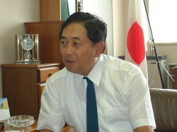
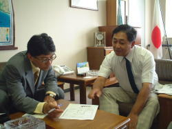
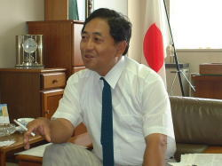
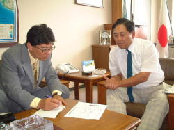
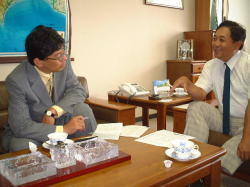

| 中国財務局長・矢野和之氏へのインタビュー このところ、失速感のあるアメリカ経済ではありますが、その前は非常に好調。一方日本はバブル崩壊以後、低迷が続いているのが現状。その現場の中、アメリカでベンチャービジネス、特にベンチャー・キャピタルの動きについて調査研究し、論文も発表した、中国財務局長の矢野和之氏に、インタビューさせていただきました。 ――ベンチャーとかに関心を持たれた経緯について 「当時、ニューヨークの証券経済研究所のトップをして、ニューヨークの情報などを日本に送っていたのですが、アメリカが好況、日本が不況という中で、その原因の一つがベンチャー企業の存在ではないかと言うことが何となくわかって、それからその方面の研究をやりました。90年代のアメリカ経済の成長の原動力として、ニュービジネス、いわゆるベンチャー企業の躍進がそれを引っ張っているものと思われますね」。 |
| 
――矢野局長さんにとって、ベンチャー企業というものは？ 「大きく分けて２つあります。まずはハイテク産業。特にポイントとなるのは、アメリカは国を挙げて知的所有権の保護の確立を目指してきたこと。それが引いてはハイテク産業の成長の要因にもなってきました。それと、もう一つはハイテク以外のニュービジネス産業。サービス、レジャー、医療、福祉など分野は幅広いのですが、アメリカの様々な状況変化が、これからのニュービジネスの成長に大いに関連しています。例えば、アメリカは所得水準で受けられる医療のレベルがはっきりしていますし、それと女性の社会進出もニュービジネスの成長に大きく関わっています。例えばハウスクリーニング、食材の宅配、託児所などなど。在宅介護サービスもこれからの範疇になります」 ――アメリカはもともと、ベンチャー・スピリットがあるから、ベンチャー企業の隆盛があるという一般的な意見に対して矢野さんは異を唱えているとのことですが。 「アメリカの最近の歴史を見てみると、いろいろと気付かされることがあります。私は今のベンチャービジネスの原点は、スプートニク・ショックから始まったと思っています。どういうことかといいますと、ソ連に有人宇宙飛行で負けたアメリカは、その後理科系大学や工学部大学院のエンジニア輩出に力を入れます。ところが、アポロで月面に初めて人類を降り立った後は、宇宙開発が一段落し、NASAの大量解雇があって、例えばNASAからタクシーの運転手という話も伝わってきました。また、ベビーブーマーが卒業して大学の先生、研究所等も人員が余剰となっていた。その上、AT&Tを筆頭に大企業が数万人規模の、大規模なリストラの中で、アメリカでは大企業に対する信仰がなくなってきた。しかも、アメリカの特徴として、一定数の女性とか、人種とかのマイノリティを確保しなければならない。そういった回りの環境もあって、ごく普通のホワイトカラーが大企業を信頼出来なくなり、それが結果として、ベンチャー企業に流れていきました」。 |
| 
――ベンチャー企業を考える場合、アメリカだから特別という見方は必ずしもそうではないということですね。 「アメリカ人だから、ベンチャー・スピリットがあったという図式は決して正しい訳ではなく、アメリカ人とて普通は楽に生きたい。わざわざ、不安定な状況に自分を追い込むことはしたくない。でも、回りのそうした直接的なプッシュ要因が、彼らをベンチャー企業に向かわせていったであろうし、また、同時にそれをサポートする要因、例えば、金融、税制などが重なりました。アントレプレナー、起業家を支える要因が、アメリカには確かに存在していましたね」。 ――それと、アメリカの風土って、ベンチャー企業の再チャレンジに非常に寛容なところですよね。 「アメリカは、昔から失敗者に寛容な国で、敗者復活の思想があります。この背景には、もともと、アメリカに流れてきたのが、ヨーロッパで成功者になれなかった人々が、アメリカで成功を目指してやってきていることがあります。ヨーロッパでの敗者としては、ヨーロッパに対してのある種のコンプレックスがあって、それゆえ、成功者に対しては、惜しみなく賞賛を与えるそれがアメリカ人共通のベースになっています。アメリカの映画って、多くがハッピーエンドですよね。それはアメリカ人の心みたいなもので、例えば、童話の「フランダースの犬」は、アメリカではハッピーエンドになっています」。 |
| 
――日本は空白の10年が終わり、いま、何か新しいことをしなければというような風潮があるように感じますが。 「日本は空白の10年ですが、アメリカは70年代、80年代と苦しんでいて、90年代にやっと花が開きました。つまり、アメリカでさえベンチャーという花が開くまで20年以上かかっています。忍耐が必要です。広島は特定企業の求心力は落ちているものの、企業城下町の特徴として潜在的にポテンシャルの高い企業はありますので、これからだと思います。要はいま、やっと日本、広島がスタートについたと思っていいのではないかと思います」。 ――いまの日本経済、広島の経済を矢野さんはどう見られていらっしゃいますか？ 「皆さんが、よく閉塞状態といいますが、決して中国地方の景気は悪くありません。というのは、それは統計数字からも明らかです。但し、問題なのは、例えば携帯電話の景気の良さは、次の生産に繋がらないサービス業であること、また、ユニクロに代表されるように生産拠点を海外へシフトした場合には、いくら国内消費が増加してもストレートに国内総生産の増加に繋がらないことなどから、景況感の悪化として表面に出ていると思います」。 |
| ――今後の経済発展のために必要なことというのは？ 「何らかのニュービジネスを立ち上げることが重要だと思っています。それには、それをサポートする税制などインフラ面のフォローが必要です。これからのビジネス・チャンスは医療、福祉の部分も注目されます。同時に、ニュービジネスに対する理解をどうしていくかがポイントではないかと思います」。 ――エルメスやルイ・ヴィトンが好調なように、日本ってかなりお金がある国ですよね。 「アメリカにいた時の話ですが、ニューヨークの有名なアウトレットでは日本人向けの売上が増加しており、これで何故日本が不況なのかといった記事がニューヨークタイムスに掲載されたことがあります。海外からみると日本はそれほど不況下にあるとは見ていないのではないでしょうか。世界一の人件費で、世界一高い物価を維持し、世界一の消費生活を享受している。決して、個人生活は悪くないので、もっと明るくなりましようと、皆さんに言いたいですね。但し、ニュービジネス、アイデアなどはこれから、本当に必要な時期を向かえていますので、それをどんどん出して、実現を目指せるような制度の見直しや意識の改革が必要だと思っています」。 |